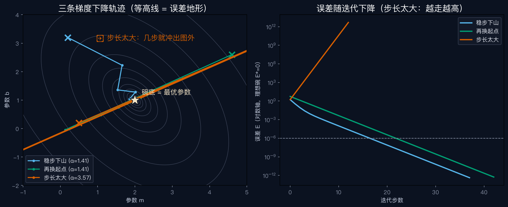

给拟合一个方向 —— E004 正规方程、E039 LM 算法共同的地基
原书附录 A.2 讲最小二乘，第一个例子是特征点对齐图像——求的是变换的参数，正是上一集那类参数。这里先拿最简单的直线练手：拟一条 \(y = mx + b\) 的直线，两个旋钮：斜率 m、截距 b。
误差：每个点的竖直距离，平方后加总——离得越远罚得越狠。
找最优参数 = 在地形里找最低点。山里有雾，看不见谷底，只能看清脚下这一小块——往哪边迈一小步，高度降得最快？
曲线上取两点连成割线，两点越靠越近，极限就是切线。切线的斜率，就是导数。
斜率为正：上坡；为负：下坡；等于零：脚下平坦——山顶、谷底，或都不是（比如 \(y=x^3\) 的原点）。
两个旋钮，各量一次坡度。
直线拟合的梯度就两个分量：对 m 的偏导、对 b 的偏导。
梯度（不为零时）垂直于等高线，指向上坡最陡的方向。想下山？倒着走：沿负梯度方向迈步——这就是梯度下降。
为什么垂直？相邻等高线的落差固定，垂直穿过路程最短，坡度自然最陡。原书把正规方程的残差 \(d - Cx\) 叫最陡下降方向（第 935 页）——它恰好就是负梯度（注意：这是方程残差，不是开头的观测减预测）。
迈多大？增量乘 α：从 1 开始，误差没降就减半（线搜索）。
三条轨迹：蓝绿起点不同、步长相同，橙色步长放大越界。
稳定上限 = 2 ÷ 海森矩阵最大特征值（讲者推导；本实验碗的 E=½dᵀAd，海森矩阵即 A）

原书 A.5.1 把主角让给共轭梯度：需要的迭代步数，从大致跟条件数成正比，降到只跟条件数的平方根成正比。条件数就是碗有多扁：峡谷越窄长，条件数越大。
普通下降在峡谷里来回横跳是讲者的演示；共轭梯度从最陡下降方向出发（第 935 页），之后每一步都记住上一步的走向。
导数是瞬时变化率，偏导是冻住其他旋钮的导数；
梯度上坡最陡，下山请倒着走。